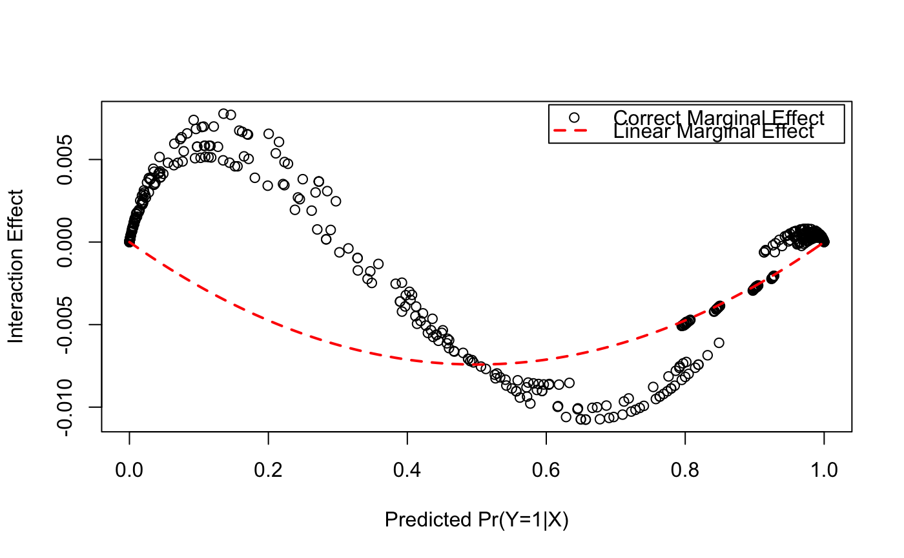

intEff.RdNorton and Ai (2003) and Norton, Wang and Ai (2004) discuss methods for calculating the appropriate marginal effects for interactions in binary logit/probit models. These functions are direct translations of the Norton, Wang and Ai (2004) Stata code.
intEff(obj, vars, data)
| obj | A binary logit or probit model estimated with |
|---|---|
| vars | A vector of the two variables involved in the interaction. |
| data | A data frame used in the call to |
A list is returned with two elements - byobs and
atment. The byobs result gives the interaction effect
evaluated at each observation. The atmean element has the marginal
effect evaluated at the mean. Each eleement contains an element int
which is a data frame with the following variable:
The correctly calucalted marginal effect.
The incorrectly calculated marginal effect following the linear model analogy.
Predicted Pr(Y=1|X).
Standard error of
int_eff.
The interaction effect divided by its standard error
Norton, Edward C., Hua Wang and Chunrong Ai. 2004. Computing
Interaction Effects and Standard Errors in Logit and Probit Models. The
Stata Journal 4(2): 154-167.
Ai, Chunrong and Edward C. Norton. 2003. Interaction Terms in Logit and Probit Models. Economics Letters 80(1): 123-129.
Norton, Edward C., Hua Wang and Chunrong Ai. 2004. inteff: Computing Interaction Effects and Standard Errors in Logit and Probit Models, Stata Code.
data(france) mod <- glm(voteleft ~ age*lrself + retnat + male, data=france, family=binomial) out <- intEff(obj=mod, vars=c("age", "lrself"), data=france) out <- out$byobs$int plot(out$phat, out$int_eff, xlab="Predicted Pr(Y=1|X)", ylab = "Interaction Effect")legend("topright", c("Correct Marginal Effect", "Linear Marginal Effect"), pch=c(1, NA), lty=c(NA, 2), col=c("black", "red"), lwd=c(NA, 2), inset=.01)